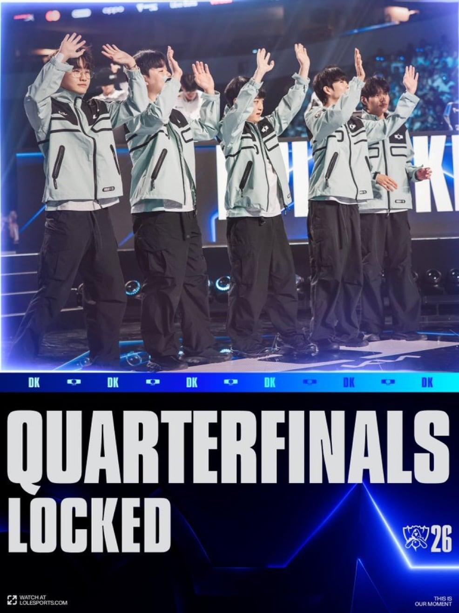
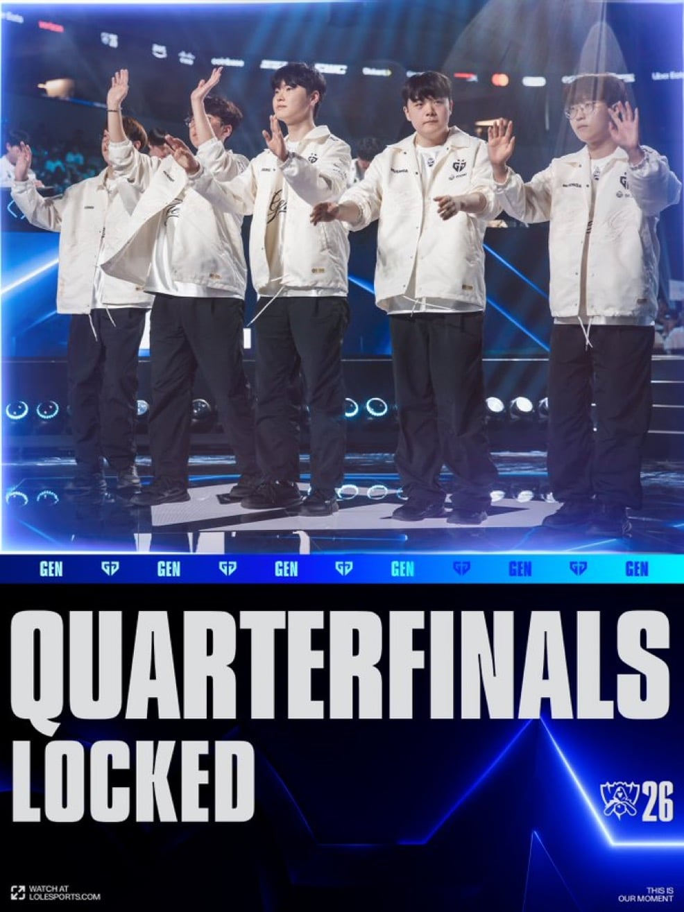
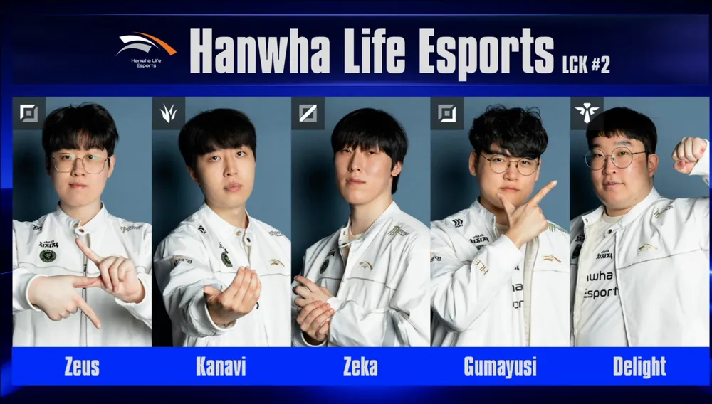
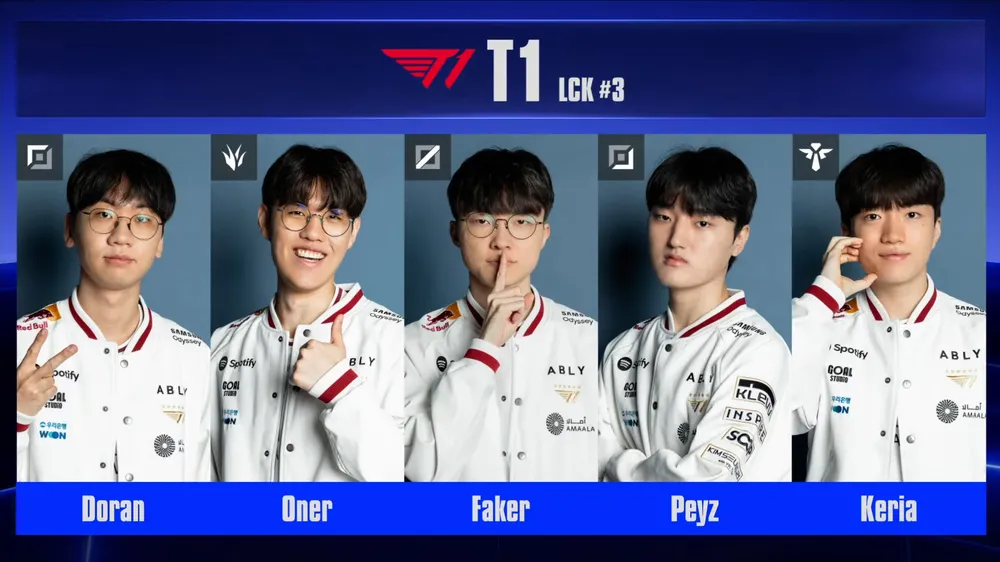

4시드 디플러스기아 8강 진출
G2(승), T1(승), MKOI(승)

1시드 젠지 8강 진출
IG(승), HLE(승), LYON(승)

2시드 한화생명 1승2패 -> 다음경기 패배시 월즈 종료
TES(승), GEN(패), IG(패)

3시드 T1 1승1패 -> 내일 오전 2시 CFO전 예정
LOS(승), DK(패)

4시드 디플러스기아 8강 진출
G2(승), T1(승), MKOI(승)

1시드 젠지 8강 진출
IG(승), HLE(승), LYON(승)

2시드 한화생명 1승2패 -> 다음경기 패배시 월즈 종료
TES(승), GEN(패), IG(패)

3시드 T1 1승1패 -> 내일 오전 2시 CFO전 예정
LOS(승), DK(패)
ig도 세잖아.
티원이번에 진짜 좀 아닌거 같은데..
매년 그랬었잖아ㄲ
T1 CFO 잡고 라이언 만나서 지고 한화 만나서 이기고 8강 갈듯 한화는 T1한테 막타 맞고 집가고
쇼메 한번 더 들자
t1 왜 오더가 계속 갈리는거같냐, 누가 문제여
자아가 생기면 삐그덕 거리는..
한화 젠지한테 진거는 원래도 젠지가 단단하고 개인 무력으로 해결하는 느낌이면
얘넨 한 명 머리 박아서 쏠리는 순간 우르르 몰려가서 주먹질로 해결하는 스타일(선수 개인이 뛰어나지않단 얘기가 아님)이라 똑같이 한다는 가정하에 질거 예상했는데
IG전은 똑같은거 똑같이 하다가 똑같이 대가리 터져죽음 질만해서 졌다
오히려 선수개인은 얘들도 못지않게 뛰어난편이지 ㅇㅇ
근데 결속력 자체는 어쩔수가없나봄 젠지 스쿼드가 오래되기도 했고 일단 뒤지게 단단함 한번 포지션 선점하고
굳히기 실력이 ㅅㅂ 그냥 예술임 역대 어느팀을 봐도
젠지가 오래한것도 있는데 한화가 너무 이레귤러야
특히 카나비가 말이안됨
잘해 진짜 잘하고 영리한데 공격력 몰빵이라서 사린다는게 없음
탑급 프로에서 급발진하는건 도란이 최고인데 카나비가 거의 맞먹음
한화가 개인 능력치도 거의다 높아서 저 돌발상황이 얼추 커버가 되는데
이게 안되는날이 오면 그냥 와르르멘션됨
내가보기엔 도란이나 카나비나 급발진 속도가 레전든데 도란은 실력그래프가 꼬라박은전적이 좀 더 많아서 그래보이는듯 ㅋㅋ
쇼메야, 올해엔 신화 한번 써 보자. ㅜㅜ
티원 칠성 가자잇
dk 한타 폭발력 진짜 지리긴함 이번 월즈 일낼듯
한화가 의외긴한데 올라가겠지
딥기 수련회로 두번다 이기는거 쫄깃했다
원래 티원 월즈는 8강부터긴 했어 스위스에선 항상 나사 하나씩 빠져있음
이번엔 젠지나 DK가 함 들어봐야지
젠딮한 응원한다 한화는 투자도 많이해서 호감이고 딮기는 서사가 있고 젠지는 말년 기인의 성불신화가 보고 싶어
스토리적으론 딮기가 우승하고 씨맥성불, 쇼메 서사 쓰는거지
기인 카밀 차력쇼 아니었으면 졌을듯 ㄹㅇ